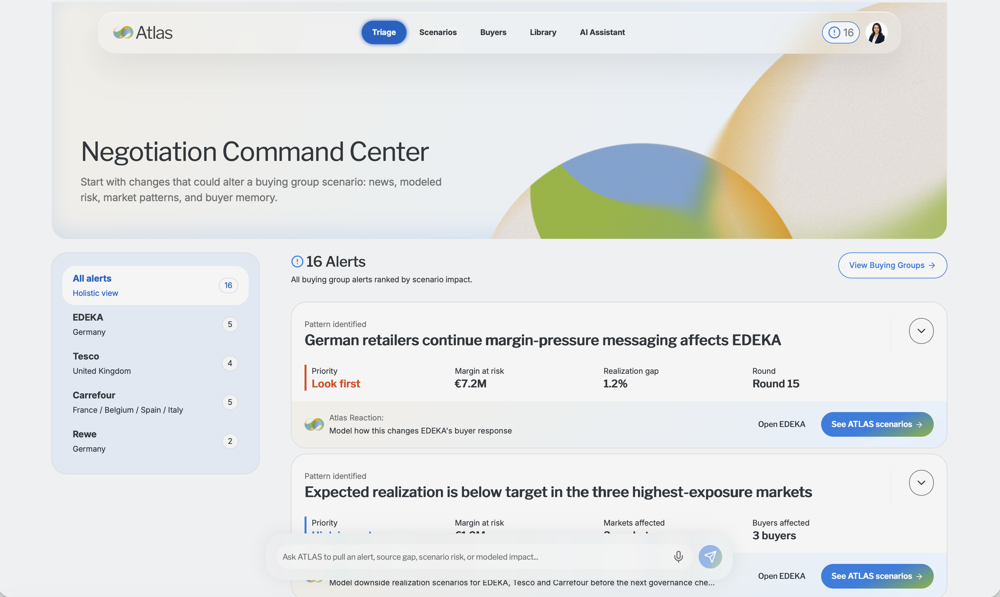
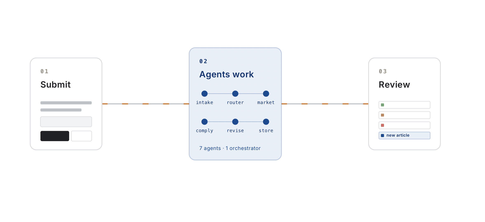
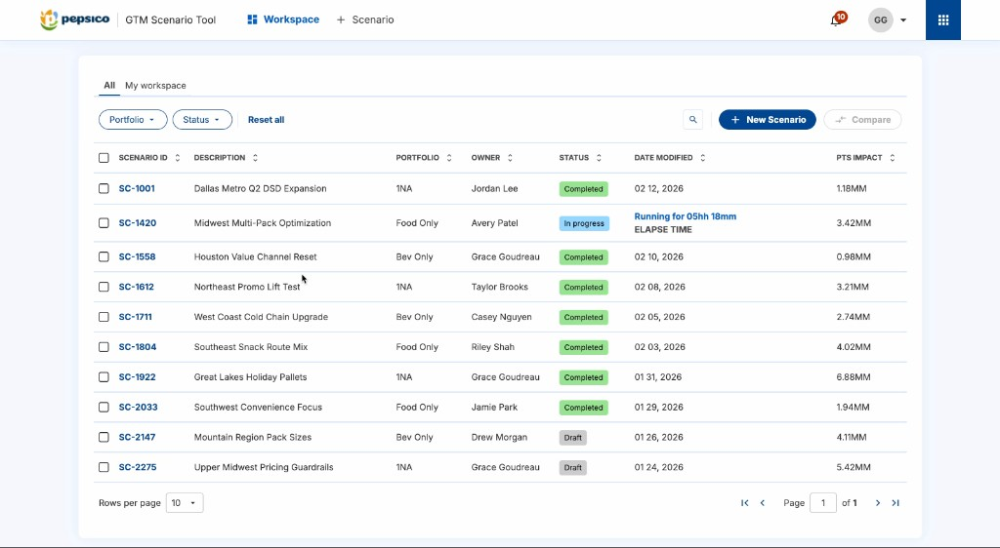
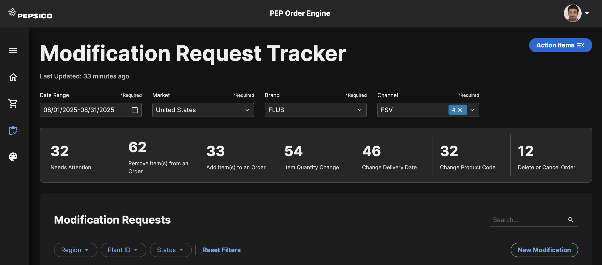
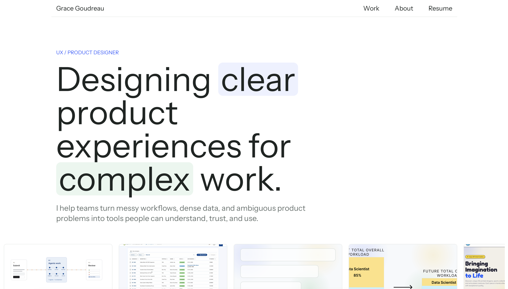

UX / Product Designer & Strategist
Designing clear product experiences for complex work.
I partner with cross-functional teams to diagnose abstract operational problems and engineer high-craft product strategies. Using functional code prototyping, I transform dense enterprise complexity into intuitive, scalable interactive solutions.

01 / Product Strategy & AI Discovery
Designing a Decision-Intelligence POC in 3 Weeks
A UX strategy sprint using an AI-assisted proof of concept, user feedback, and product judgment to turn ambiguity into a buildable direction.

02 / AI Orchestration & High-Craft MVP
MyPepsiCo Content Agent
A multi-agent editorial system that turns scattered content ops into one grounded, reviewable workflow.

03 / BigTech Co-Development & IA
Scenario Modeling Workspace
A governed planning workspace for defining scope, comparing runs, and helping teams trust high-stakes scenario work.

04 / End-to-End Transaction Flow
Order Management
Replaced fragmented order intake with a clearer workflow for submission, tracking, communication, and automation.

05 / Design Process
Portfolio Build
A meta case study on using modern design tools, fast prototyping, and handoff thinking to move from concept to responsive site.

06 / Data-heavy UX
Forecast Analysis
A decision-support tool that helps analysts work more independently with complex data and clearer model outputs.

07 / Ecommerce UX
Wonder 3D Prints
A fast ecommerce design sprint focused on clearer browsing, trust-building product presentation, and checkout momentum.